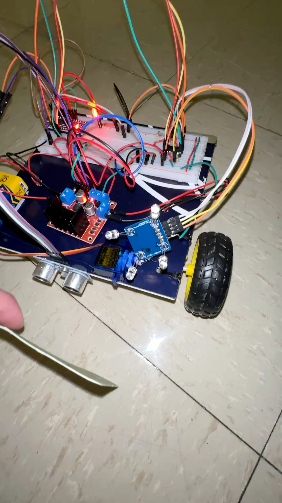

School Project
Light Following Robot
Autonomous robot that tracks a moving light source while avoiding obstacles using analog sensing.
Overview
This build combined photodiodes, filtering circuits, and motor drivers to create a robot that follows a moving light target. The project emphasized analog signal conditioning and control logic.
What I built
- Sensor array with op-amp filtering for light detection.
- Arduino logic for steering and obstacle avoidance.
- Motor driver integration and chassis wiring.
What I learned
- Analog filtering to stabilize noisy sensor inputs.
- PID-style tuning for smoother steering response.
- How to prototype quickly with limited components.
Gallery
